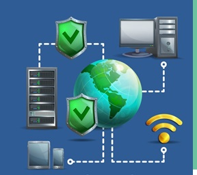

Debemos proteger software, hardware y datos de amenazas lógicas, personas, problemas físicos y catástrofe por esto a continuación se presentan algunas recomendaciones a tener en cuenta.
1. Use contraseñas robustas
A continuación se presenta una lista que se puede utilizar para establecer contraseñas seguras:
• Usar una combinación de letras sin sentido
• Incluir una mezcla de caracteres mayúscula, minúscula y numéricos
• Las contraseñas largas son mejores
• Las contraseñas deben cambiarse periódicamente
• Generar nuevas contraseñas en lugar de reutilizar las mismos una y otra vez
• No utilizar un conjunto de caracteres consecutivos en el teclado
• Tratar las contraseñas de forma totalmente secreta
2. Usar siempre protección antivirus
El software antivirus no es siempre efectivo 100%, pero es mejor que no tener ninguna protección en absoluto. Es muy posible que un usuario que no haya instalado un antivirus en su ordenador piense que no tiene ningún virus aunque probablemente su equipo esté infectado.
Con el fin de lograr la máxima protección, es necesario instalar el software antivirus tanto en equipos individuales, como en todos los servidores de la red. Esa es la única manera de detectar virus en todos los puntos de entrada.
3. Cambiar las configuraciones predeterminadas
Uno de los errores más habituales es instalar un sistema dejando la configuración por defecto. Las configuraciones predeterminadas a menudo tienen cuentas de administrador predeterminadas y contraseñas que conocen todos los piratas informáticos. Esto es aplicable a routers, hubs, switches, sistemas operativos, sistemas de correo electrónico, bases de datos, servidores web…
Antes de poner cualquier ordenador en la red, se deberían cambiar los nombres de cuenta y contraseñas por defecto y aplicar todos los parches de seguridad. Aunque esas tareas impliquen consumir más tiempo en la instalación, ahorrará muchos dolores de cabeza posteriores.
4. Usar un cortafuego (firewall)
Es muy recomendable usar algún tipo de producto de firewall. Los posibles atacantes exploran constantemente los sistemas que utilizan la mayoría de usuarios en busca de vulnerabilidades conocidas. Los firewalls de red (ya sean basados en software o hardware) pueden proporcionar cierto grado de protección contra estos ataques.
5. No abrir ficheros adjuntos desconocidos en correos electrónicos
Antes de abrir los archivos adjuntos de correo electrónico, debemos estar seguros de conocer el origen de los datos. No es suficiente que el correo haya sido enviado 21 desde una dirección reconocida. Para una protección adicional, se puede desconectar el ordenador de la red antes de abrir el archivo.

Designed by macrovector / Freepik
6. No ejecutar programas de origen desconocido
Nunca se debe ejecutar un programa a menos que sepa lo ha desarrollado una persona o empresa de confianza. Además, no se deben enviar programas de origen desconocido a amigos o compañeros de trabajo simplemente porque son divertidos - pueden contener lo que se denomina un caballo de Troya.
7. Mantener actualizadas todas las aplicaciones, incluyendo el sistema operativo
Los vendedores de software suelen entregar parches cuando se descubre que un programa tiene una vulnerabilidad. La mayoría de los productos disponen de un método para obtener actualizaciones y parches. Algunas aplicaciones comprueban automáticamente si hay actualizaciones disponibles. Si no es así, es necesario comprobar periódicamente si hay actualizaciones pendientes de instalar.
8. Apagar el ordenador o desconéctelo de la red cuando no lo use
Es recomendable tener el ordenador apagado o desconectado de la red cuando no está siendo utilizado. En esas condiciones, un atacante no puede atacar a un equipo.
9. Hacer copias de seguridad de los datos críticos y crear un disco de arranque
Es conveniente guardar una copia de los archivos críticos en un medio extraíble, y almacenar los discos de copia de seguridad en algún lugar lejos del ordenador. Además, es muy útil crear un disco de arranque para permitir la recuperación de un equipo si hubiese problemas.